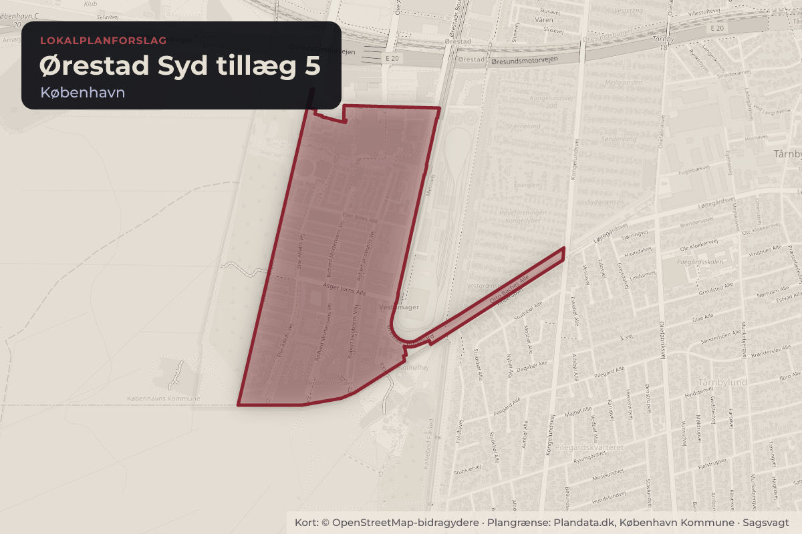
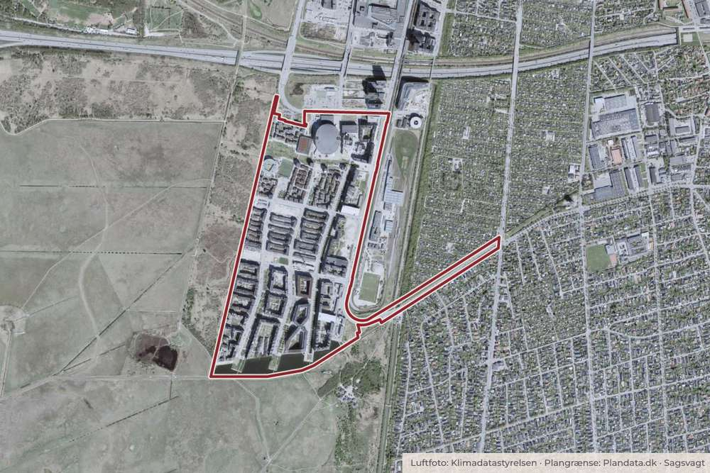

Behandlet 23. november, Klima-, Miljø- og Teknikudvalget
Endelig vedtagelse af lokalplan Ørestad Syd tillæg 5, Amager Vest
Byggeri og lokalplanerErhverv og job

Kort: © OpenStreetMap-bidragydere. Plangrænse: Plandata.dk, København Kommune.

Kort fortalt
- Hvem
- Klima-, Miljø- og TeknikudvalgetGår videre til Økonomiudvalget og Borgerrepræsentationen
- Hvornår
- Mandag 23. november 2026
- Status
- Behandlet. Referatet med beslutningen er ikke offentliggjort endnu.
- Næste skridt
- Hvis Borgerrepræsentationen godkender planforslagene, bekendtgør forvaltningerne disse i henhold til reglerne i planloven.
Er noget forkert her? Skriv til os
Hvad kan du gøre?
- Sagen er ikke slut
- Den skal videre til Økonomiudvalget og Borgerrepræsentationen. Indtil den er afgjort, kan du skrive til politikerne. Du finder dem på kk.dk.
Sagens vej
- 23. novemberKlima-, Miljø- og TeknikudvalgetBehandlet
- SenereØkonomiudvalgetAfventer
- SenereBorgerrepræsentationenAfventer
Læs hele sagen Kommunens egen tekst
Indstilling
Klima-,
Miljø- og Teknikforvaltningen indstiller, at Klima-, Miljø- og Teknikudvalget
over for Økonomiudvalget og Borgerrepræsentationen anbefaler,
• at
godkende lokalplan Ørestad Syd tillæg 5 (bilag 2) med miljørapport (bilag
3) med ændringer som foreslået i afsnittet Løsning.
Økonomiforvaltningen indstiller, at Økonomiudvalget over for
Borgerrepræsentationen anbefaler,
• at
godkende udbygningsaftale (bilag 4) med grundejeren.
Problemstilling
Teknik-
og Miljøudvalget godkendte den 17. maj 2021 medlemsforslag om vurdering af
mulighederne for at sikre publikumsorienterede aktiviteter i lokalplanområdet.
Siden henvendte Royal Arena sig med ønske om ændrede bestemmelser for
anvendelsen af deres stueetager. By & Havn har henvendt sig med et projekt
for en ændret indretning af Asger Jorns Allé, konvertering fra erhverv til
boliger samt ønske om fravigelse af aftale om færdiggørelse af parkering i
Ørestad Syd. Byggeri København har henvendt sig med ønske om mulighed for
etablering af hhv. en idrætshal og specialskole samt et botilbud. Byggeønskerne
er ikke i overensstemmelse med den gældende lokalplan, hvorfor realisering af
ønskerne forudsætter et tillæg til lokalplanen. Startredegørelse (bilag 11)
blev vedtaget på Klima-, Miljø- og Teknikudvalgets møde den 9. januar 2023 med
anbefalinger for andel af stueetager til publikumsorienteret serviceerhverv, og
til udformning af boliger ved Ørestads Boulevard, hvor der også er placeret
almene boliger. Det blev også besluttet, at der skal ske en konkret vurdering
af parkeringsnormen, da det er et byudviklingsområde med kort afstand
til offentlig transport.
Lokalplanforslaget
blev godkendt i Klima-, Miljø- og Teknikudvalget den 1. juni 2026. Udvalget
vedtog, at kravet i forhold til publikumsorienterede aktiviteter på det sydlige
hovedstrøg (Asger Jorns Allé) skærpes, og muligheden for ungdomsboliger i
delområde IIIC ændres til et krav om ungdomsboliger.
Løsning
Lokalplanområdet
ligger i bydelen Amager Vest, og indgår i byområdet Ørestad Syd. Mod øst og syd
grænser området op til den fredede Kalvebod Fælled og mod syd Tårnby Kommune.
Lokalplanforslaget øger den procentvise andel af
stueetagerne, som skal anvendes til publikumsorienteret serviceerhverv på Asger
Jorns Allé, Ørestads Boulevard og Ejler Billes Allé, samt mod offentlige byrum.
Derudover muliggøres ny boligbebyggelse med almene boliger, nye bestemmelser
for stueetager til Royal Arena, som ændrer kravene til publikumsorienteret
serviceerhverv og nye bestemmelser for indretningen af Asger Jorns Allé, som er
fastlagt i udbygningsaftalen, jf. bilag 4. Derudover muliggøres en
specialskole, en idrætshal og et kommunalt botilbud.
Almene
boliger
Da
skoledistriktet har under 30 % almene familieboliger, stilles krav om minimum
25 % almene boliger, jf. Kommuneplan 2024.
Parkering
Lokalplanområdet
er i kommuneplanen udpeget som byudviklingsområde, hvor der er mulighed for at
reducere parkeringsnormerne for alle funktioner med 20 %. Forvaltningen
vurderer, at krav om parkering kan reduceres med 20% i lokalplanen pga. nærhed
til kollektiv transport og cykelinfrastruktur. Der sikres et minimum af kørende
adgang til området.
Miljøvurdering
Der er i
henhold til miljøvurderingsloven udarbejdet en miljørapport. Der muliggøres nyt
byggeri til støjfølsom anvendelse på arealer, der er belastet af
virksomhedsstøj fra Metroselskabets Klargøringscenter, der overstiger
grænseværdierne. Forvaltningen har vurderet, at det ikke er teknisk og
økonomisk muligt at nedbringe støjen, og at der er tale om ”vedblivende støj”.
Det indebærer, at grænseværdierne for virksomhedsstøj kan fraviges. I stedet
skal de indendørs grænseværdier overholdes. Miljørapporten er vedlagt som bilag
3.
Forslag
til ændringer af lokalplanforslaget
Høringen
har givet anledning til, at forvaltningen foreslår ændringer af lokalplanforslagets bestemmelser, herunder om mulighed for
yderligere to handicapbuspladser, krav om yderligere to støjskærme, lavere værn
på tagterrasser, lavere begrønningsprocent
i byrum til skolen, mere fleksible byggefelter til skolen, samt redaktionelle
ændringer.
Høring
Forslaget
har været i høring fra den 23. juni til den 18. september 2026. Forvaltningen
har modtaget 111 henvendelser. Høringen har givet anledning til
ændringsforslag. De modtagne henvendelser i høringsperioden vedlægges som
bilag 5 og 6. I bilag 7 er henvendelserne refereret med
forvaltningens bemærkninger. Borgernes hovedsynspunkter i høringen er anført
nedenfor.
Amager
Vest Lokaludvalg har følgende hovedsynspunkter (bilag 5, henvendelse nr. 95):
• Er
positive overfor aktive stueetager. De er usikre på om plejehjem og
daginstitution bidrager til bylivet, og om der er synergi ved placering af
et botilbud.
• Er
kritiske overfor at fjerne og reducere krav til stueetagerne i Royal
Arena.
• Kan
ikke bakke op om konvertering af parkeringshus til parkeringskælder.
Pladserne er vigtige for bylivet og sikrer at der ikke parkeres
uhensigtsmæssige steder. Der opfordres til at licenser kan bruges på tværs
af p-huse. Der ønskes mere korttidsparkering.
• Bestemmelsen
om handicapparkering til skolen skal ændres fra ’kan’ til ’skal’.
• Der
er behov for trafikale tiltag for at tilgodese bløde trafikanter.
• Anbefaler
at kommunen i samarbejde med grundejere, erhvervsdrivende og øvrige
aktører udvikler en strategi for et bæredygtigt lokalt erhvervsliv.
Forvaltningens
bemærkninger
• Forvaltningen
vurderer, at der er synergi mellem byliv og aktive stueetager, og
botilbud, plejehjem og daginstitution. Daginstitutionen bidrager i sig
selv med byliv, og plejehjem og botilbud placeres normalt i forbindelse
med boliger og erhverv i København.
• Bestemmelser
for Royal Arenas stueetager skærpes på nogle facader og lempes på andre,
så det sikres, at de eksisterende anvendelser af facaden til forskellige
arenaformål, kan fastholdes. Forvaltningen ser ikke udfordringer med, at
kravet på dele af facaderne lempes, da der stadig muliggøres udadvendte
funktioner i stueetagen, samt at den anvendelse der lovliggøres, er
funktioner som fx reception, udstillingslokaler, showroom, værksteder og
kantine. Funktioner der sikrer at stueetagerne ikke er lukkede, men
bidrager til tryghed og liv.
• Det
blev i 2019 aftalt mellem Københavns Kommune og By & Havn, og i 2025
besluttet i Klima-, Miljø- og Teknikudvalget, at afstandskravet på ca. 250
m til nærmeste parkeringsanlæg fraviges op til 600 m, og at der muliggøres
5.000 m2 boliger. I forbindelse med grundsalget stilles krav om, at
byggeriet skal opføres med en privat p-kælder. Såfremt
der ikke kan indgås tilstrækkelig mange aftaler om p-licenser, bortfalder
forpligtelsen for køber til at anlægge en p-kælder. Med stationsnærheden
vurderer forvaltningen ikke at parkeringshuset i sig selv vil bidrage til
byliv. Infrastrukturen er fastlagt i gældende lokalplaner, herunder
afsætningspladser. Lokalplanen kan ikke fastsætte bestemmelser om
parkeringslicenser.
• Forvaltningen
foreslår at fastholde det som en ’kan’ bestemmelse, så der etableres de
handicapholdepladser, der er behov for, når der foreligger et konkret
projekt i byggesagen.
• Lokalplanen
har ikke til formål at ændre den infrastruktur som er fastlagt i
eksisterende lokalplaner og som er realiseret.
• Forvaltningen
deler visionen om at fremme et bæredygtigt lokalt erhvervsliv og der
stilles i lokalplanen krav om flere aktive stueetager. Udviklingen af en
overordnet erhvervsstrategi falder uden for rammerne af, hvad en lokalplan
kan fastsætte.
Hovedsynspunkter
i borgernes henvendelser (bilag 5, henvendelse nr. 1-16, 18-22, 24-32, 34-88,
90-93, 95, 98-99, 101-105, 108-111):
• 28
henvendelser er positive overfor flere aktive stueetager, men er nervøse
for om der vil stå tomme butikker, og om plejehjemmet og botilbuddet vil
forhindre byliv.
• 75
henvendelser er imod lempede krav til stueetager i Royal Arena og mener,
at kommunen kun accepterer det, pga. salget af arenaen til Live Nation.
• 21
henvendelser er imod at der ikke opføres et parkeringshus, men i stedet
boliger, da det er et brud med nærhedsprincippet og forringer det
væsentligt for beboere.
• 12
Henvendelser ønsker hastighedsbegrænsende tiltag i Ørestad, da mange kører
stærkt.
• 19
henvendelser efterspørger mere grønt i Ørestad Syd og ønsker ikke flere
boliger.
Forvaltningens
bemærkninger
Henvendelse 1 og 2 er sammenfaldende med lokaludvalgets
synspunkter, og forvaltningen henviser derfor til svar til lokaludvalget.
• Parkeringsnormerne
er reduceret i Kommuneplanen 2019 og 2024, og i 2020 blev der udarbejdet
et nyt administrationsgrundlag for bilfrie byområder hvor afstandskravet
til parkeringshuse er på ca. 600 m.
• Lokalplanen
baserer sig på den allerede etablerede trafikstruktur fastlagt i
eksisterende lokalplaner. Vejmyndigheden kan efterfølgende lave
hastighedsdæmpende tiltag.
• Byrum
i Ørestad Syd er fastlagt i de eksisterende lokalplaner og er realiseret. Byrummet
på Asger Jorns Allé var ikke realiseret, og By & Havn ønskede en anden
indretning af byrummet. Flere boliger opfylder kravet i Kommuneplan 2024
om behovet for flere boliger for at dække boligbehovet.
Hovedsynspunkter
i øvrige henvendelser (bilag 5, henvendelse nr. 25, 94, 104):
• Metroselskabet
henviser til jernbanelovens støjbestemmelser, da selskabet arbejder på at
få kontrol- og vedligeholdelsescenteret udpeget efter reglerne. Selskabet
mener, at lokalplanens støjmæssige forudsætninger ikke udgør bindende
forpligtelser for selskabet, og forudsætter, at støjdæmpende
foranstaltninger etableres på grundejernes ejendomme.
• Børne-
og Ungdomsforvaltningen og Økonomiforvaltningen ønsker flere
handicapparkeringspladser i forbindelse med skolen.
Forvaltningens
bemærkninger
• Forvaltningen
er opmærksom på de nye støjbestemmelser i jernbaneloven. Bygninger inden
for det støjbelastede område skal udformes med facadeløsninger, der sikrer
den nødvendige støjisolering, samt at der indgås aftale mellem grundejerne
og Metroselskabet om fortsatte metroaktiviteter og støjreducerende
foranstaltninger.
• Forvaltningen
foreslår at hæve antallet af pladser til handicapbusser fra 8 til 10.
Supplerende
høring
Ændringsforslag om to yderligere støjskærme i delområde VIIIBa har været i supplerende
høring fra den 21. september til den 5. oktober 2026, som følge af opdateret
støjnotat i forbindelse med miljørapporten. Forvaltningen har modtaget to høringssvar
(bilag 6). Metroselskabet har ikke nogen bemærkninger og en borger synes at det
er en god idé.
Politisk
handlerum
Det kan
besluttes,
• at
ændre omfanget og placeringen af det kommende nybyggeri. Forvaltningen
vurderer at sådanne ændringer vil kræve, alt efter ændringernes omfang, at
sagen sendes retur til forvaltningen med henblik på supplerende høring
eller ny offentlig høring.
Hvis indstillingen ikke bliver godkendt, vil det betyde, at
lokalplanen og udbygningsaftalen ikke bliver realiseret.
Økonomi
Udbygningsaftale
På opfordring fra By &
Havn er der udarbejdet et udkast til en frivillig udbygningsaftale i henhold
til planlovens § 21 b (bilag 4). Ved aftalen forpligter By & Havn sig til
at etablere byrum langs med samt opgradere og forskønne Asger Jorns Allé.
Hvis
udbygningsaftalen vedtages, afsættes der 130.000 kr. i afledt drift til
projektet. Herunder er 107.650 kr. til renhold og grøn pleje samt 22.350 kr.
til vintertjeneste. Der ændres ikke på driften af belægninger. Beløbet indarbejdes
i en kommende budgetindstilling i en pulje under Økonomiudvalget. Midlerne
udmøntes, når Klima-, Miljø- og Teknikforvaltningen overtager driften, efter
anlægget er etableret og ibrugtaget.
Videre proces
Hvis
Borgerrepræsentationen godkender planforslagene, bekendtgør forvaltningerne
disse i henhold til reglerne i planloven.
Bilag
- Bilag 1 Overblik over den politiske behandling
- Bilag 2 Forslag til lokalplan 398 Ørestad Syd tillæg 5
- Bilag 3 Miljørapport
- Bilag 4 Udbygningsaftale
- Bilag 5 Henvendelser modtaget i høringsperioden
- Bilag 6 Henvendelser modtaget i supplerende høring
- Bilag 7 Svar på henvendelser i høringsperioden
- Bilag 8 Forslag til ændringer efter høring
- Bilag 9 Referat fra borgermøde
- Bilag 10 Sammenfattende redegørelse for miljøvurdering
- Bilag 11 Startredegørelse
Kilde: Københavns Kommune, Klima-, Miljø- og Teknikudvalget, dagsorden fra mødet mandag 23. november 2026, punkt 11. Læs den originale sag hos kommunen.
Steder i sagen: Ørestad